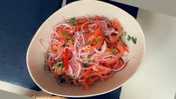
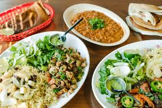
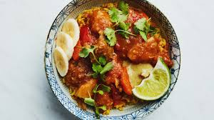
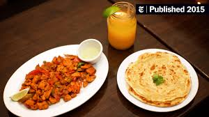
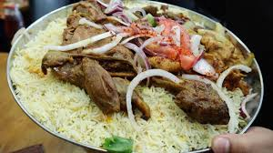
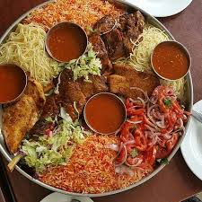
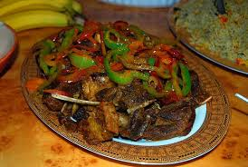

Please note that this is just a sample menu, and actual offerings may vary at Kaafi Restaurant. We hope this menu provides a glimpse into the delightful flavors of Somali cuisine that await you at our establishment.